Scene 1Warm-Up
▶ Start hereHow your Wonder Films lessons work1-minute videoOpen ▾
🎯 TodayI can…
- explain how weather, ecosystems, organisms, and human actions are all connected.
- describe how a change in one part of nature can cause changes in other parts.
- use evidence to explain why protecting ecosystems matters for all living things.

🔎 Mystery specimenFurry, lumpy, and full of clues?
What to do: Press Inspect specimen. Move the magnifying lens over the lump, then tap 3 things you notice.
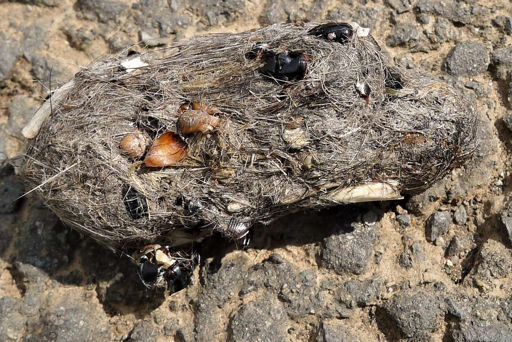
📚 Word WallWords scientists use
What to do: Tap or click each card to flip it and read what the word means.
Scene 2The Lesson
🕸 Part 1Every Living Thing Has Neighbors
Remember the mystery specimen? It's an owl pellet: the fur, bones, and beetle shells an owl couldn't digest. One small lump holds pieces of a food web.
Think about a Florida wetland. Fish eat tiny water plants. A heron eats the fish. An alligator may eat the heron. If the pond dries up, the fish disappear, and so does the heron. That's interdependence. Scientists call the whole connected community, living and nonliving, an ecosystem.
🎞️ Put the scenes in orderWhat happened to the oysters of Apalachicola Bay?
What to do: Drag each photo into the film strip, from first to last. You can also tap a photo, then tap a frame. Get the order right and your strip becomes a movie.
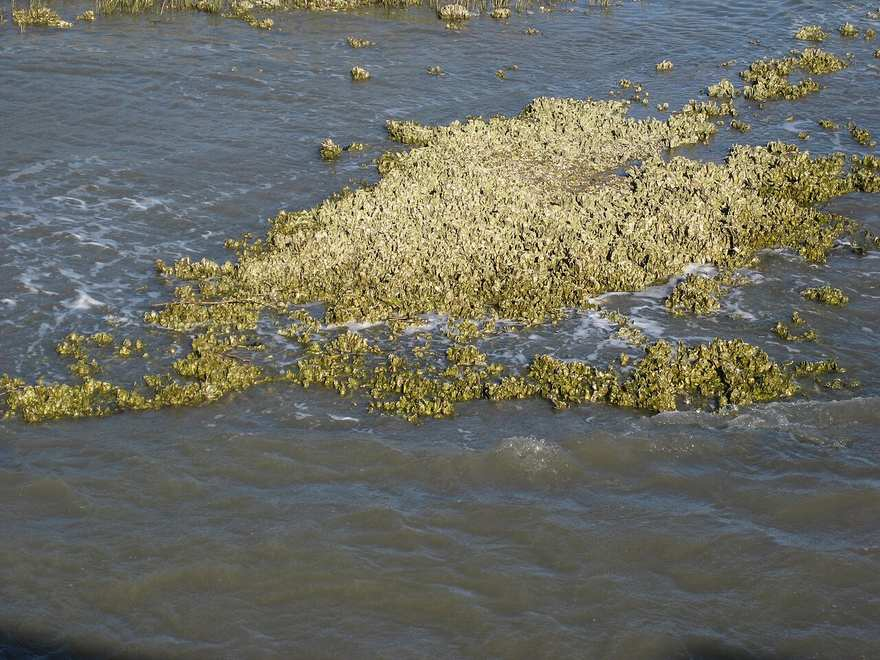
Sam says, "Only the oysters were hurt when the bay got saltier." What do you think?
🌦 Part 2Weather Writes the Rules
Climate decides which plants can grow in a place, and plants decide which animals can live there. Florida's wet summers flood the sawgrass, and the water brings food and shelter for many birds. In the Everglades, rain sets the water level, and so do canals that people built.
🧪 The Flow TestWhich marsh keeps its water in the dry season?
What to do: Follow the steps one at a time. You will pick, test, and then explain.
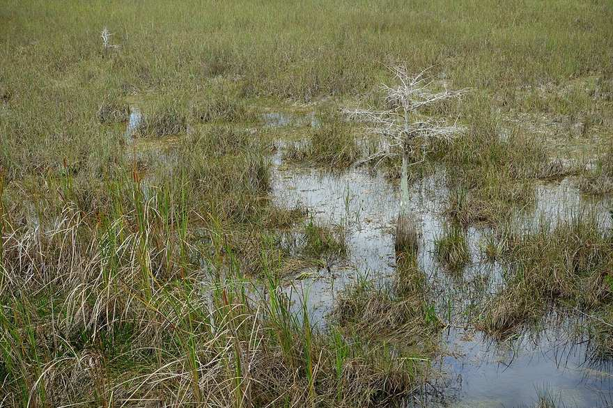
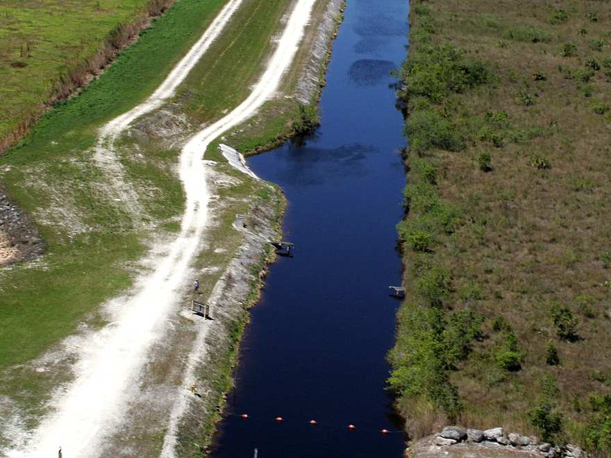
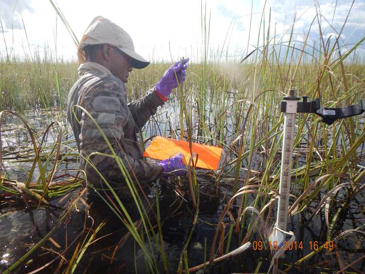
🌍 Part 3Traits, Change, and Human Hands
Living things have adaptations that fit their home. A spoonbill sweeps its flat bill through shallow water to catch small fish. Mangrove roots hold tight in soft, flooded mud. But places can change faster than living things can adapt. People drain wetlands and cut forests. People can also choose to protect places, like Everglades National Park.
🧵 Follow the ThreadTrace a drought, one step at a time
What to do: First, make a prediction. Then brush the glowing thread: drag across it (or tap it again and again) until the photo shows.
Leo says, "A long dry spell only changes the water." What do you predict?
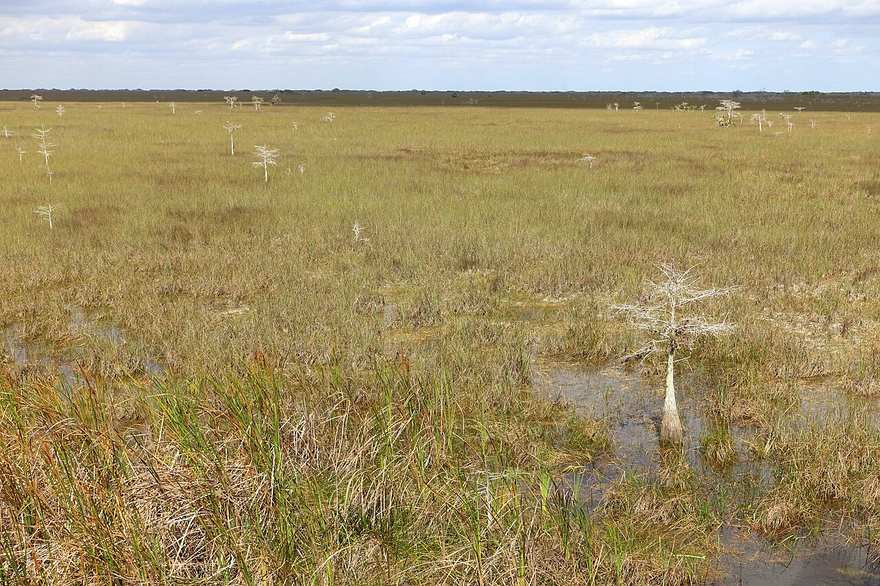
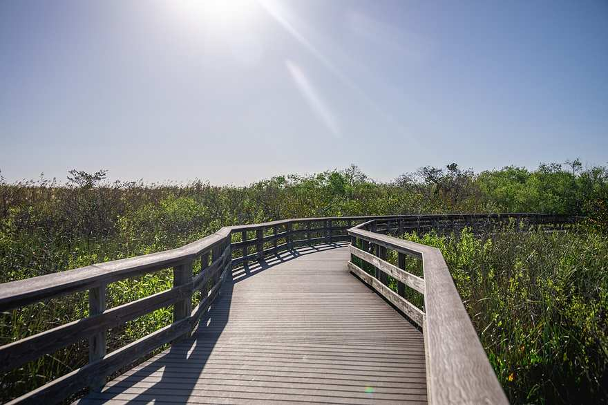
Step 1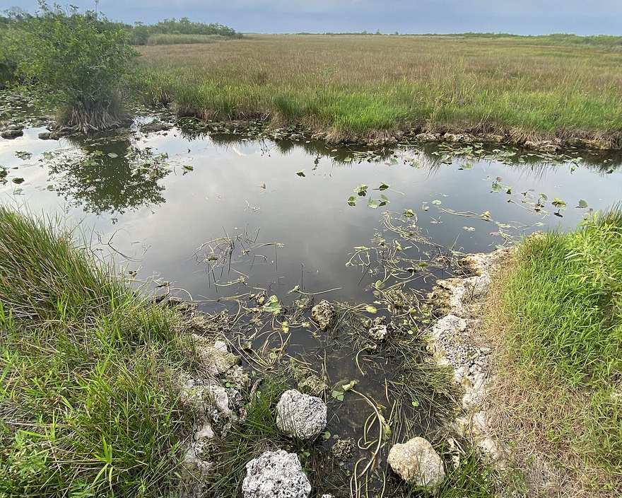
Step 2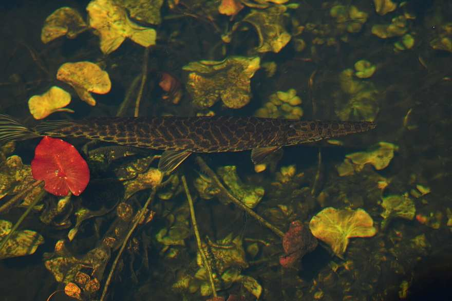
Step 3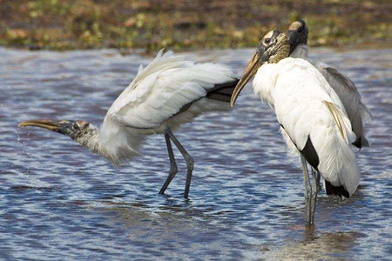
Step 4A change in one part of nature causes changes in other parts. A long dry season starts with the weather, then moves through the water, plants, and animals that depend on each other.
Ava says, "Who cares if one kind of bird disappears from the Everglades? There are thousands of others." What do you think?
The Gator's Water Hole
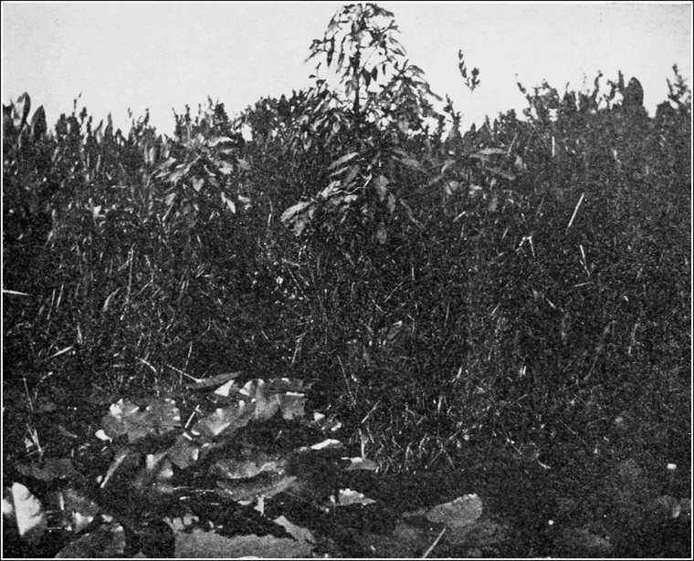
Alligators use their snouts, feet, and tails to clear mud and plants out of low spots. The cleared hole fills with water. In the dry season, it can be some of the only water around.
Fish, turtles, snails, and birds crowd in. The alligator eats some of them, but many more survive until the rain comes back.
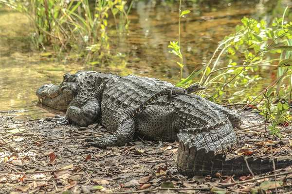
🕵️ Part 4Connection Files
What to do: Pick 3 cards, one at a time. Tap something you see, then name what it connects to. Predict what happens if it changes, and see the evidence.
| Card | What I saw | Connects to | If it changed | My evidence |
|---|
🗂️ Sort the actionsUse your evidence to sort the actions OPTIONALOpen ▾
What to do: Pick one you solved. Pick the place it points to, then pick the living things that belong there.
Pick one from your chart and explain it.
Start with: "Card __ shows…"
Scene 3Self-Check
What does it mean when scientists say living things in an ecosystem are "interdependent"?
A long drought hits a Florida wetland, and water levels drop too low for fish to survive. What would most likely happen to the wading birds that eat those fish?
Which is the best example of humans having a positive impact on an ecosystem?
Scene 4Assignment
🔍 Part AIdentify the connections
What to do: For each topic, write one real-world example. Use your science words.
1. Climate and organisms: name one plant or animal and explain how its habitat's climate helps it survive.
2. Traits and survival: describe one adaptation and explain what problem it solves for that organism.
3. Food webs and change: describe one change that could disrupt a food web you know. What would be the first effect?
🚀 Part BShort answer
What to do: Answer in complete sentences. Use your science words.
1. Why can a single weather change, like a drought, affect so many different species? Explain using the idea of a food web.
2. How is human impact different from other kinds of change? Give one example of harmful human impact and one example of helpful human impact.
✍️ Write and explainThe Everglades is one of the most connected ecosystems in the world, but also one of the most threatened. What do you think would happen if water levels kept dropping year after year?
What to do: Pick one from your evidence chart. Answer the three questions. Use at least two of the science words under the boxes.
Start with: "I think that if water levels kept dropping, the Everglades would…"
Start with: "I know this because the lesson showed that…"
Start with: "This makes sense because when one part of an ecosystem changes…"
🎨 Part CDraw and label
What to do: Draw a Connection Web for any real ecosystem you choose. Show at least 5 living or nonliving things. Connect them with arrows, and write on each arrow what the connection is (like sun → sawgrass: gives light).
🎬 Your question from Scene 1Can you answer it now?
What do you still wonder about? Write your question here. Then answer it.
📋 My answersEverything you wrote, in one place
(Your answers show up here as you write.)
How to turn in: Copy your answers and paste them into the Canvas assignment. Or download the file and upload it. Then press Save my drawing in Part C and upload your drawing too.
✅ Checklist
What to do: Tap each item when it is done. Items you finish on the page check themselves.
- My evidence chart has 3 connection files and my explanation.
- Part A: all three examples.
- Part B: questions 1 and 2.
- Part C: my drawing and both labels.
- Write and explain, with at least two science words.
🎬 Premiere my connection filmYour exhibit
What to do: Check your exhibit. Pick the one you wrote about, add your first name, then press Premiere film.
I observed…
It connects to…
My evidence…
It tells us…
🎞️ This film's frames
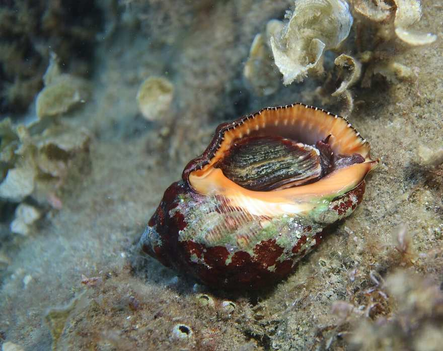
River to Oyster
The Flow Test
Follow the Thread
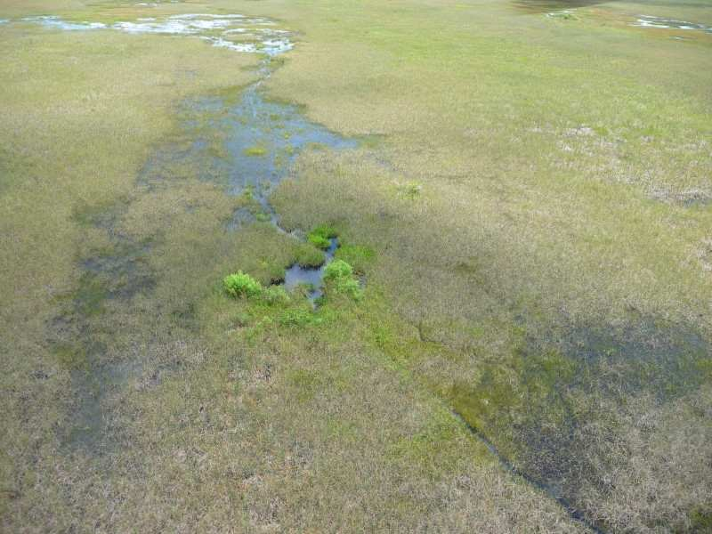
Connection files
Earn all four frames in the Lesson, then finish the checklist.
🔜 Coming up nextComing up next: 33.02
Your Final Science Investigation. Next time, you'll ask your own science question and use evidence to answer it, just like a real scientist.
Photo and music credits
- File:Everglades Sampling Location, September 20, 2014 (15834616445), USEPA Environmental-Protection-Agency, Public domain
- File:Aerial view of alligator hole (3efd265b-1dd8-b71c-07d2-adff37ffd152), NPS, Public domain
- File:Great Blue Heron & Gator, NPSphoto, S. Zenner (9101425836), Everglades NPS from Homestead, Florida, United States, Public domain
- File:Looking North at WCA3a from ENP, NPSPhoto, 2008 (9250138048), Everglades NPS from Homestead, Florida, United States, Public domain
- File:Tamiami Road break through, NPSPhoto, 2013 (9250163960), evergladesnps, Public domain
- File:Mangrove snapper, Lutjanus griseus, Everglades National Park, Public domain
- File:Mangroves (53575741485), evergladesnps, Public domain
- File:Ichetucknee Springs (48929003331), Florida Guidebook from Florida, USA, CC BY 2.0
- File:Sea Grass Restoration Project (KSC-20230329-PH-KLS01 0092), NASA Kennedy Space Center / NASA/Kim Shiflett, Public domain
- File:Gopher tortoise entering burrow, Gary2863 at English Wikipedia, Public domain
- File:Black Racer at Entrance to Gopher Tortoise Burrow - Flickr - Andrea West…, Andrea Westmoreland from DeLand, United States, CC BY-SA 2.0
- File:Dry Mud, NPSPhoto (9257940252), Everglades NPS from Homestead, Florida, United States, Public domain
- File:Dry Taylor Slough, NPSPhoto, S.Zenner (9099484897), Everglades NPS from Homestead, Florida, United States, Public domain
- File:Great Blue Heron and gator, NPSPhoto, D.Harris (1) (9101504428), Everglades NPS from Homestead, Florida, United States, Public domain
- File:Wood Storks, NPSPhoto (9101505148), evergladesnps, Public domain
- File:Sunset in Everglades (53409023763), evergladesnps, Public domain
- File:Endangered Florida manatee (Trichechus manatus) (7636809538), U.S. Fish and Wildlife Service Headquarters, Public domain
- File:Wood Stork Feeding in Swamp 1, Amaury Laporte, CC BY 2.0
- File:Great Blue Heron and Alligator (5476685021), evergladesnps, Public domain
- File:Spider web Luc Viatour, Luc Viatour, CC BY-SA 3.0
- File:American Alligator and baby (53467660657), evergladesnps, Public domain
- File:Anhinga Trail (53558084704), evergladesnps, Public domain
- File:Low water level – Anhinga Trail (49831323203), evergladesnps, Public domain
- File:Florida Gar Fish, Amaury Laporte, CC BY 2.0
- File:Wood Storks (4605905251), USFWS/Southeast, Public domain
- File:Crews Lake - What's left of it, DanTD, CC BY-SA 3.0
- File:Apalachicola National Estuarine Research Reserve, aerial view, NOAA, Public domain
- File:Rotmund-Leistenschnecke Stramonita haemastoma 2, Holger Krisp, CC BY 4.0
- File:Apalachicola River, FL, View, Amy K Posner, CC BY-SA 4.0
- File:Oyster reef Hunting Island SC, Jstuby at English Wikipedia, Public domain
- File:Shark River Slough - Everglades National Park - DSC09461, Daderot, CC0
- File:Owl pellet (51652574469), gailhampshire, CC BY 2.0
- File:Shark River Slough - Everglades National Park - DSC09453, Daderot, CC0
- File:Levees, Dikes and Dams (14), NPSPhoto, R. Cammauf (9250141478), Everglades NPS from Homestead, Florida, United States, Public domain
- File:PSM V77 D375 A typical gator hole in florida, Unknown authorUnknown author, Public domain
- Music: Ode to Joy (Ludwig van Beethoven), Concert Band of the United States Air Force Band of the Rockies (1993), public domain recording (via Wikimedia Commons).
- Opti the owl: Optima Academy. Sound effects are made by the page. The oyster movie, the Flow Test, and the drought thread are models; every place photo is real. The owl pellet was found in England. The oyster-drill snail was photographed in Italy (the same kind lives in the Gulf of Mexico), and the oyster reef in South Carolina; the dry lake in scene 1 is Crews Lake, Florida, in 2010.